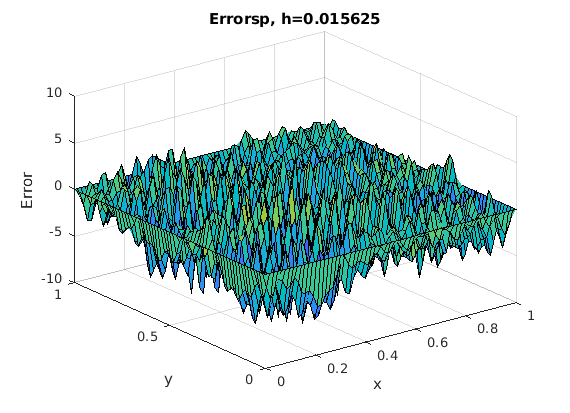

Contents
a = 0; b = 1;
f = @(x,y) 10*pi^2*(1+cos(4*pi*(x+2*y))-2*sin(2*pi*(x+2*y))).*exp(sin(2*pi*(x+2*y)));
g = @(x,y) exp(sin(2*pi*(x+2*y)));
uexact = @(x,y) g(x,y);
k1 = zeros(1,3);
h1 = zeros(1,3);
m1 = zeros(1,3);
t = zeros(1,3);
t_sor = zeros(1,3);
t_sp = zeros(1,3);
t_dst = zeros(1,3);
t_mg = zeros(1,3);
t1 = [];
tsor = [];
tsp = [];
tdst = [];
tmg = [];
for ii = 1:3
for k=4:6
k1(k-3) = k;
m1(k-3) = 2^k-1;
m = 2^k-1;
h1(k-3) = (b-a)/(m+1);
h = (b-a)/(m+1);
w = 2/(1+sin(pi*h));
tic
[u,x,y] = fd2poisson(f,g,a,b,m);
gedirect = toc;
t(k-3) = gedirect;
tic
[usor,x,y] = fd2poissonsor(f,g,a,b,m,w);
gedirect = toc;
t_sor(k-3) = gedirect;
tic
[usp,x,y] = fd2poissonsp(f,g,a,b,m);
gedirect = toc;
t_sp(k-3) = gedirect;
tic
[udst,x,y] = fd2poissondst(f,g,a,b,m);
gedirect = toc;
t_dst(k-3) = gedirect;
tic
[umg,x,y] = fd2poissonmg(f,g,a,b,m);
gedirect = toc;
t_mg(k-3) = gedirect;
end
t1 = [t1,t];
tsor = [tsor,t_sor];
tsp = [tsp, t_sp];
tdst = [tdst, t_dst];
tmg = [tmg,t_mg];
end
c4=[t1(1);t1(4);t1(7)]';
d4=[tsor(1);tsor(4);tsor(7)]';
e4=[tsp(1);tsp(4);tsp(7)]';
fd4=[tdst(1);tdst(4);tdst(7)]';
h4=[tmg(1);tmg(4);tmg(7)]';
c5=[t1(2);t1(5);t1(8)]';
d5=[tsor(2);tsor(5);tsor(8)]';
e5=[tsp(2);tsp(5);tsp(8)]';
fd5=[tdst(2);tdst(5);tdst(8)]';
h5=[tmg(2);tmg(5);tmg(8)]';
c6=[t1(3);t1(6);t1(9)]';
d6=[tsor(3);tsor(6);tsor(9)]';
e6=[tsp(3);tsp(6);tsp(9)]';
fd6=[tdst(3);tdst(6);tdst(9)]';
h6=[tmg(3);tmg(6);tmg(9)]';
k4 = [k1(1);k1(1);k1(1)];
m4 = [m1(1);m1(1);m1(1)];
h4 = [h1(1);h1(1);h1(1)];
Table4 = table(k4,m4,h4,c4(:),d4(:),e4(:),fd4(:),h4(:), 'VariableNames',{'k','m','h','t_stan','time_sor','time_sp','time_dst','time_mg'});
k5 = [k1(2);k1(2);k1(2)];
m5 = [m1(2);m1(2);m1(2)];
h5 = [h1(2);h1(2);h1(2)];
Table5 = table(k5,m5,h5,c5(:),d5(:),e5(:),fd5(:),h5(:), 'VariableNames',{'k','m','h','t_stan','time_sor','time_sp','time_dst','time_mg'});
k6 = [k1(3);k1(3);k1(3)];
m6 = [m1(3);m1(3);m1(3)];
h6 = [h1(3);h1(3);h1(3)];
Table6 = table(k6,m6,h6,c6(:),d6(:),e6(:),fd6(:),h6(:), 'VariableNames',{'k','m','h','t_stan','time_sor','time_sp','time_dst','time_mg'});
Table = [Table4; Table5; Table6]
Tablem4 = table(k1(1),m1(1),h1(1),mean(c4),mean(d4),mean(e4),mean(fd4),mean(h4), 'VariableNames',{'k','m','h','t_stan','time_sor','time_sp','time_dst','time_mg'});
Tablem5 = table(k1(2),m1(2),h1(2),mean(c5),mean(d5),mean(e5),mean(fd5),mean(h5), 'VariableNames',{'k','m','h','t_stan','time_sor','time_sp','time_dst','time_mg'});
Tablem6 = table(k1(3),m1(3),h1(3),mean(c6),mean(d6),mean(e6),mean(fd6),mean(h6), 'VariableNames',{'k','m','h','t_stan','time_sor','time_sp','time_dst','time_mg'});
Table_mean = [Tablem4; Tablem5; Tablem6]
fprintf(' Make: Ilife Zed AIR plus \n Processor type: Intel Celeron CPU N3350\n Speed: @ 1.10 GHz x2 \n Memory: 6GB DDR III RAM\n');
fprintf(' (d). According to the computed mean wall clock time from Table_mean, fd2poissondst \n appears to be the best since it has the lowest computation time amongest all other method as m increases.\n');
fprintf(' Note: I used only k values from 4 to 5, because when i tried to run for k = 7 and above \n the MATLAB on my computer terminated, so i wouldnot perform any further simulations beyond k=6.\n');
Table =
9×8 table
k m h t_stan time_sor time_sp time_dst time_mg
_ __ ________ ________ ________ ________ ________ ________
4 15 0.0625 0.32918 0.019242 0.185 0.17037 0.0625
4 15 0.0625 0.009003 0.003236 0.025851 0.002601 0.0625
4 15 0.0625 0.011332 0.002087 0.002174 0.000754 0.0625
5 31 0.03125 0.085766 0.025161 0.023151 0.01136 0.03125
5 31 0.03125 0.093103 0.008237 0.008022 0.020678 0.03125
5 31 0.03125 0.104 0.006533 0.007171 0.001901 0.03125
6 63 0.015625 2.9396 0.076385 0.03003 0.013109 0.015625
6 63 0.015625 2.7507 0.037827 0.027925 0.006052 0.015625
6 63 0.015625 2.8239 0.039376 0.027933 0.005864 0.015625
Table_mean =
3×8 table
k m h t_stan time_sor time_sp time_dst time_mg
_ __ ________ ________ _________ ________ _________ ________
4 15 0.0625 0.1165 0.0081883 0.071008 0.057909 0.0625
5 31 0.03125 0.094288 0.01331 0.012781 0.011313 0.03125
6 63 0.015625 2.8381 0.051196 0.028629 0.0083417 0.015625
Make: Ilife Zed AIR plus
Processor type: Intel Celeron CPU N3350
Speed: @ 1.10 GHz x2
Memory: 6GB DDR III RAM
(d). According to the computed mean wall clock time from Table_mean, fd2poissondst
appears to be the best since it has the lowest computation time amongest all other method as m increases.
Note: I used only k values from 4 to 5, because when i tried to run for k = 7 and above
the MATLAB on my computer terminated, so i wouldnot perform any further simulations beyond k=6.
Plot solution
figure, set(gcf,'DefaultAxesFontSize',10,'PaperPosition', [0 0 3.5 3.5]),
surf(x,y,u), xlabel('x'), ylabel('y'), zlabel('u(x,y)'),
title(strcat('Numerical Solution to Poisson Equation, h=',num2str(h)));
figure, set(gcf,'DefaultAxesFontSize',10,'PaperPosition', [0 0 3.5 3.5]),
surf(x,y,u-uexact(x,y)),xlabel('x'),ylabel('y'), zlabel('Error'),
title(strcat('Error, h=',num2str(h)));
Plot solution
figure, set(gcf,'DefaultAxesFontSize',10,'PaperPosition', [0 0 3.5 3.5]),
surf(x,y,usor), xlabel('x'), ylabel('y'), zlabel('u(x,y)'),
title(strcat('Numerical Solution,usor, to Poisson Equation, h=',num2str(h)));
figure, set(gcf,'DefaultAxesFontSize',10,'PaperPosition', [0 0 3.5 3.5]),
surf(x,y,usor-uexact(x,y)),xlabel('x'),ylabel('y'), zlabel('Error'),
title(strcat('Errorsor, h=',num2str(h)));


Plot solution
figure, set(gcf,'DefaultAxesFontSize',10,'PaperPosition', [0 0 3.5 3.5]),
surf(x,y,usp), xlabel('x'), ylabel('y'), zlabel('u(x,y)'),
title(strcat('Numerical Solution,usp, to Poisson Equation, h=',num2str(h)));
figure, set(gcf,'DefaultAxesFontSize',10,'PaperPosition', [0 0 3.5 3.5]),
surf(x,y,usp-uexact(x,y)),xlabel('x'),ylabel('y'), zlabel('Error'),
title(strcat('Errorsp, h=',num2str(h)));

Plot solution
figure, set(gcf,'DefaultAxesFontSize',10,'PaperPosition', [0 0 3.5 3.5]),
surf(x,y,udst), xlabel('x'), ylabel('y'), zlabel('u(x,y)'),
title(strcat('Numerical Solution,udst, to Poisson Equation, h=',num2str(h)));
figure, set(gcf,'DefaultAxesFontSize',10,'PaperPosition', [0 0 3.5 3.5]),
surf(x,y,udst-uexact(x,y)),xlabel('x'),ylabel('y'), zlabel('Error'),
title(strcat('Errordst, h=',num2str(h)));
Plot solution
figure, set(gcf,'DefaultAxesFontSize',10,'PaperPosition', [0 0 3.5 3.5]),
surf(x,y,umg), xlabel('x'), ylabel('y'), zlabel('u(x,y)'),
title(strcat('Numerical Solution,umg, to Poisson Equation, h=',num2str(h)));
figure, set(gcf,'DefaultAxesFontSize',10,'PaperPosition', [0 0 3.5 3.5]),
surf(x,y,umg-uexact(x,y)),xlabel('x'),ylabel('y'), zlabel('Error'),
title(strcat('Errormg, h=',num2str(h)));